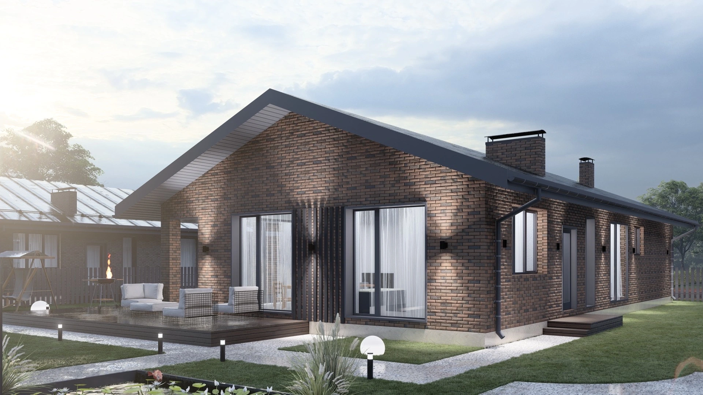
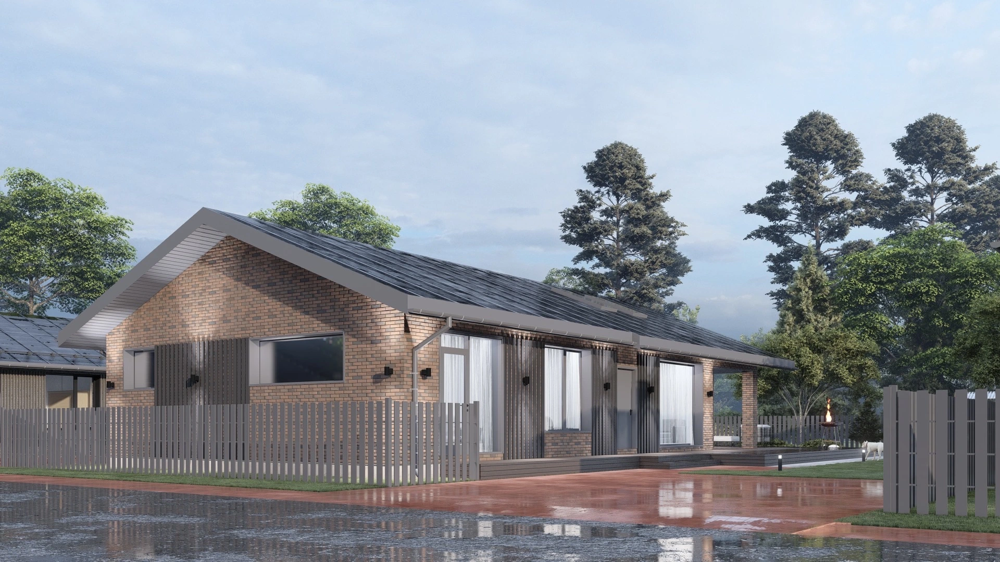

ГОТОВЫЕ ДОМА НА НОВОЙ РИГЕ
Свой дом.
Ближе к лесу.
Готовые дома со вторым светом на Новой Риге. Пространство для семьи, собственный участок и жизнь за городом.
Рассмотреть домАрхитектура Scandilux · визуализацияДОМА И УЧАСТКИВыберите свой вариантПосмотреть варианты
АРХИТЕКТУРА И ПЛАНИРОВКА
Scandilux.
Снаружи и внутри.
Посмотрите архитектуру и планировку. Наличие дома, готовность и условия покупки уточним при обращении.

Архитектура
DOLOT · Новая Рига · готовые дома
Много света.
Больше пространства.
Одноэтажный дом с панорамным остеклением. Обсудим участок и удобное время просмотра, чтобы оценить дом на месте.
Записаться на просмотр